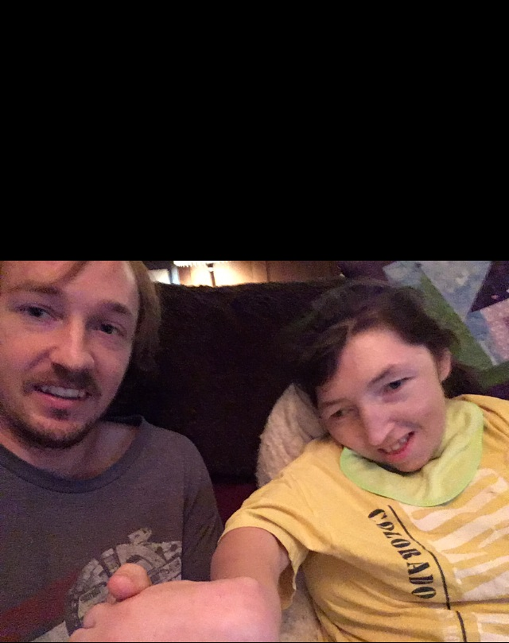

So this website is about my little sister, Miranda. This page is more in depth about her disabilities and life.
 Big smile.
Big smile.
As stated on the homepage, she has been disabled since birth. Her disability is cerebral palsy. When she was born, her umbilical chord
got wrapped around her neck 3 times. The doctors untangled it, but parts of her brain were damaged because of that. This made it so
most of muscles are either always contracting or retracting. Because her muscles are always under tension, she has always been very
small and skinny.
 ...Haha another big smile.
...Haha another big smile.
I could talk more about the negative aspects of her disability, but I think that would be missing the point. It's her ability to overcome
her obstacles that I am so impressed by. As you can see in the pictures, she is very happy, intelligent and beautiful.
 Not really smiling, but looks happy.
Not really smiling, but looks happy.

Miranda and her brother Jordan (the author)
Lilliworks is my parent's nonprofit company that makes tools for kids with disabilities to learn with. Since traditional learning may
not make sense. If you are interested in learning about a good cause.
Lilliworks link